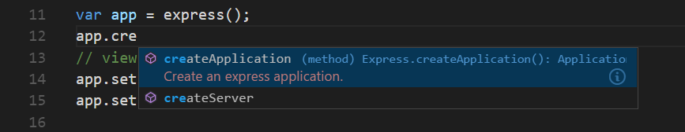
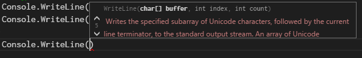
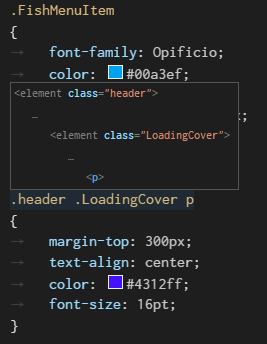
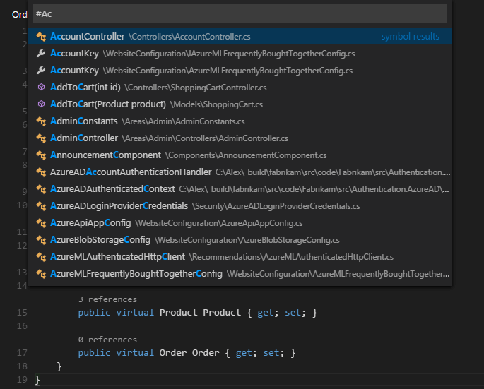
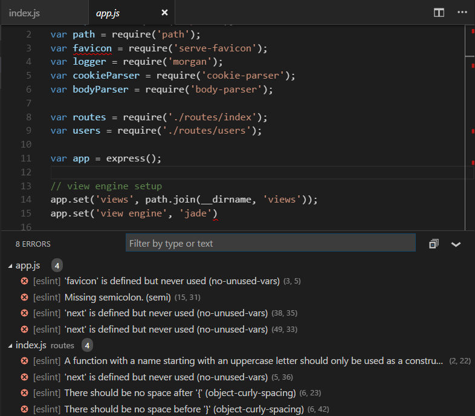
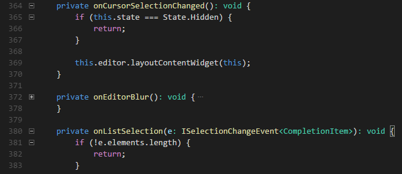

Visual Studio Code has a high productivity code editor which, when combined with programming language services, gives you the power of an IDE and the speed of a text editor. In this topic, we’ll first describe VS Code’s language intelligence features (suggestions, parameter hints, smart code navigation) and then show the power of the core text editor.
Editing - Smart
VS Code comes with a built-in JavaScript/TypeScript language service so you get JavaScript and TypeScript code intelligence out-of-the-box. For other languages, like Go, Python, and C#, you will need to install an extension for deep language service integration. Language services provide the code understanding necessary for features like IntelliSense (suggestions) and smart code navigation (Go to Definition, Find All References, Rename Symbol). Different language extensions provide different levels of support for VS Code’s language features but rest assured the community is very active adding new languages and great functionality. Learn more about installing VS Code extensions in our Extensions Marketplace topic and visit the Marketplace to see what’s available for your favorite programming languages.

IntelliSense
We’ll always offer word completion, but for the rich languages, such as JavaScript, JSON, HTML, CSS, Less, Sass, C# and TypeScript, we offer a true IntelliSense experience. If a language service knows possible completions, the IntelliSense suggestions will pop up as you type. You can always manually trigger it with ⌃Space (Windows, Linux Ctrl+Space). By default, Tab or Enter are the accept keyboard triggers but you can also customize these key bindings.
Tip: The suggestions filtering supports CamelCase so you can type the letters which are upper cased in a method name to limit the suggestions. For example, “cra” will quickly bring up “createApplication”.
Tip: IntelliSense suggestions can be configured via the
editor.quickSuggestionsandeditor.suggestOnTriggerCharacterssettings.
JavaScript and TypeScript developers can take advantage of the DefinitelyTyped type definition (typings) file repository to get IntelliSense for common JavaScript libraries (Node.js, React, Angular). You can find a good explanation on using typings files in the JavaScript language topic and the Node.js walkthrough.
Learn more in the IntelliSense document.
Parameter Hints
In JavaScript, TypeScript or C#, parameter hints will pop up as you’re typing a method invocation. You can navigate between different overloads with Up and Down and the best overload will be presented based on the arguments you pass in.

Hover
For languages that support it, the hover will show useful information, such as types of symbols, or, in the case of CSS below, the shape of the HTML that would match a certain CSS rule:

Go to Definition
If a language supports it, you can go to the definition of a symbol by pressing F12.
If you press Ctrl and hover over a symbol, a preview of the declaration will appear:

Tip: You can jump to the definition with Ctrl+Click or open the definition to the side with Ctrl+Alt+Click.
Go to Symbol
You can navigate symbols inside a file with ⇧⌘O (Windows, Linux Ctrl+Shift+O). By typing : the symbols will be grouped by category. Just press Up or Down and navigate to the place you want.
Open symbol by name
Some languages support jumping to a symbol across files with ⌘T (Windows, Linux Ctrl+T). Just type the first letter of a type you want to navigate to, regardless of which file contains it, and press Enter.

Peek
We think there’s nothing worse than a big context switch when all you want is to quickly check something. That’s why we support peeked editors. When you execute a Find All References search (via ⇧F12 (Windows, Linux Shift+F12)), or a Peek Definition (via ⌥F12 (Windows Alt+F12, Linux Ctrl+Shift+F10)), we embed the result inline:

You can navigate between different references in the peeked editor and make quick edits right there. Clicking on the peeked editor filename or double-clicking in the result list will open the reference in the outer editor.
Tip: Additionally, the peek window is closed if you press Escape or double-click in the peek editor region. You can disable this behavior with the
editor.stablePeeksetting.
Bracket matching
Matching brackets will be highlighted as soon as the cursor is near one of them.
Tip: You can jump to the matching bracket with ⇧⌘\ (Windows, Linux Ctrl+Shift+\)
Reference information
Some languages like C# support inline reference information, that is updated live. This allows you to quickly analyze the impact of your edit or the popularity of your specific method or property throughout your project:
Tip: Directly invoke the Find All References action by clicking on these annotations.
Tip: Reference information shown in CodeLens can be turned on or off through the
editor.codeLenssetting.
Rename symbol
Some languages support rename symbol across files. Simply press F2 and then type the new desired name and press Enter. All usages of the symbol will be renamed, across files.
Errors & Warnings
Warnings or Errors can be generated either via configured tasks, by rich language services, or by linters, that constantly analyze your code in the background. Since we love bug-free code, warnings and errors show up in multiple places:
- In the status bar, there is a summary of all errors and warnings counts.
- You can click on the summary or press ⇧⌘M (Windows, Linux Ctrl+Shift+M) to display the PROBLEMS panel with a list of all current errors.
- If you open a file that has errors or warnings, they will be rendered inline with the text and in the overview ruler.

Tip: To loop through errors or warnings in the current file, you can press F8 or ⇧F8 (Windows, Linux Shift+F8) which will show an inline zone detailing the problem and possible code actions (if available):
Folding
You can fold regions of source code using the folding icons on the gutter between line numbers and line start. Move the mouse over the gutter to fold and unfold regions. The folding regions are evaluated based on the indentation of lines. A folding region starts when a line has a smaller indent than one or more following lines, and ends when there is a line with the same or smaller indent.
You can also use the following actions:
- Fold (⌥⌘[ (Windows, Linux Ctrl+Shift+[)) folds the innermost uncollapsed region at the cursor
- Unfold (⌥⌘] (Windows, Linux Ctrl+Shift+])) unfolds the collapsed region at the cursor
- Fold All (⌘K ⌘0 (Windows, Linux Ctrl+K Ctrl+0)) folds all region in the editor
- Unfold All (⌘K ⌘J (Windows, Linux Ctrl+K Ctrl+J)) unfolds all regions in the editor
- Fold Level X (⌘K ⌘2 (Windows, Linux Ctrl+K Ctrl+2) for level 2) folds all regions of level X, except the region at the current cursor position

Next Steps
Now that you know how the editor works, time to try a few other things…
- Intro Video - Code Editing - Watch an introductory video on code editing features.
- The Basics - In case you missed a basic orientation around VS Code.
- Customization - Configure VS Code the way you want - Themes, Settings, Display Language
- Key Bindings - Learn how to modify key bindings to your preference.
- Debugging - This is where VS Code really shines.